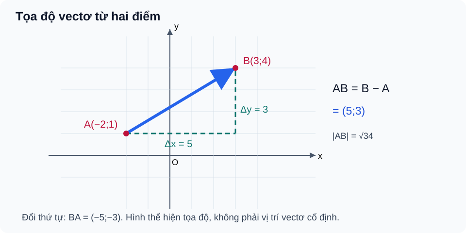

Bài 10. Vectơ trong mặt phẳng tọa độ
TOÁN 10 · CHƯƠNG IV · KIẾN THỨC SGK KNTT
Học kiến thức và ví dụ, rồi luyện tập theo từng kĩ năng.
1. Kiến thức SGK
1. Hệ tọa độ và vectơ
Trong hệ tọa độ vuông góc \(Oxy\) với hai vectơ đơn vị \(\vec i=(1;0)\) và \(\vec j=(0;1)\), vectơ \(\vec u=(u_x;u_y)=u_x\vec i+u_y\vec j\). Nếu \(A(x_A;y_A)\), \(B(x_B;y_B)\), thì
Lưu ý: Tọa độ vectơ \(\overrightarrow{AB}\) không phải tọa độ điểm \(B\) trừ khi \(A=O\).
2. Các phép toán tọa độ
Với \(\vec u=(a;b)\), \(\vec v=(c;d)\), \(t\in\mathbb R\):
\(|\vec u|=\sqrt{a^2+b^2}\), \(AB=\sqrt{(x_B-x_A)^2+(y_B-y_A)^2}\).
Điều kiện cùng phương: Hai vectơ khác không cùng phương khi \(ad-bc=0\); với vectơ không cần nêu quy ước KNTT riêng.
3. Tọa độ trung điểm và trọng tâm
\(M\) là trung điểm \(AB\) khi
Trọng tâm tam giác \(ABC\) là
Điều kiện: Chỉ dùng công thức trọng tâm khi \(ABC\) là tam giác không suy biến. Kiểm tra lại bằng \(\overrightarrow{GA}+\overrightarrow{GB}+\overrightarrow{GC}=\vec0\).
4. Ứng dụng
Định vị/chuyển động trong bản đồ Oxy phải xác định trục, đơn vị và phân biệt độ dài đường đi thực tế với khoảng cách thẳng giữa hai vị trí.
2. Ví dụ
Ví dụ 1. Tọa độ vectơ từ hai điểm
Đề: Cho \(A(-1;2)\), \(B(3;5)\). Tìm \(\overrightarrow{AB}\) và \(AB\).
Giải: \(\overrightarrow{AB}=(3-(-1);5-2)=(4;3)\), do đó \(AB=\sqrt{4^2+3^2}=5\).
Tự kiểm: \(\overrightarrow{BA}=(-4;-3)\), không phải \((4;3)\).
Ví dụ 2. Tính tọa độ biểu thức vectơ
Đề: Cho \(\vec u=(2;-1)\), \(\vec v=(-3;4)\). Tính \(2\vec u-\vec v\).
Giải: \(2\vec u=(4;-2)\), vậy \(2\vec u-\vec v=(4-(-3);-2-4)=(7;-6)\).
Tự kiểm: Nhân hệ số lên cả hai thành phần.
Ví dụ 3. Tọa độ trung điểm và trọng tâm
Đề: Cho \(A(1;3)\), \(B(5;-1)\), \(C(-2;4)\). Tìm trung điểm \(M\) của \(AB\) và trọng tâm \(G\) của tam giác.
Giải: \(M=(3;1)\); \(G=((1+5-2)/3;(3-1+4)/3)=(4/3;2)\).
Tự kiểm: Trọng tâm chia cho 3, không phải 2.
3. Hình minh họa

4. Tự khắc phục lỗi thường gặp
Lấy nhầm tọa độ B làm tọa độ AB
- Điểm nghẽn: Quên lấy tọa độ cuối trừ đầu.
- Bản chất cần sửa: Tọa độ AB = B−A, không phải B.
- Quy trình 5 bước: 1. Gạch điểm đầu A/cuối B. 2. Trừ hoành độ, tung độ. 3. Đảo chiều để tự kiểm BA=−AB. 4. Kiểm bằng độ dài. 5. Làm B10-P02.
- Liên kết item có sẵn: B10-C01, B10-P02. Không clone câu hoặc giải vào HELP_ID.
- Assessment safety: hỗ trợ chỉ tại Knowledge/Practice, không hiển thị trong phiên Tự kiểm tra trước Final Submit.
Nhầm công thức trung điểm/trọng tâm và kiểm cùng phương
- Điểm nghẽn: Chia 2 khi có ba đỉnh hoặc bỏ điều kiện vectơ khác không.
- Bản chất cần sửa: Trung điểm lấy trung bình 2 điểm, trọng tâm 3 đỉnh.
- Quy trình 5 bước: 1. Đếm số điểm. 2. Viết công thức hoành/tung. 3. Kiểm tổng GA+GB+GC. 4. Xét vectơ không riêng. 5. Luyện B10-P04/P05.
- Liên kết item có sẵn: B10-P03, B10-P04, B10-P05. Không clone câu hoặc giải vào HELP_ID.
- Assessment safety: hỗ trợ chỉ tại Knowledge/Practice, không hiển thị trong phiên Tự kiểm tra trước Final Submit.